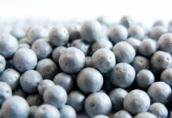

Bodemisolatie Unidek EPS Parels
Bodemisolatie is een goede oplossing voor het beperken van het warmteverlies bij vochtige en/of moeilijk bereikbare lage kruipruimten.
De bodem van de kruipruimte is veelal vochtig, er treedt dan waterdamptranssport op vanuit de kruipruimte naar de woning. Ook treedt er warmteverlies op vanuit de woning naar de kruipruimte.
Kingspan EPS parels verminderd aanzienlijk het transport van vocht vanuit de bodem de kruipruimte in en zorgt ervoor dat de warmte vanuit de woning gevangen wordt in de kruipruimte.
| Toepassing | Op de bodem van de kruipruimte |
| Materiaal | EPS/Polystyreen |
| Isolatiewaarde | Rbf waarde 4,63 m²K/W bij 20 cm dikte |
| Verwerking | ingeblazen per vrachtauto met inblaas slang |
| Garantie | 10 jaar op product en verwerking |
| Certificaat | ISSO gecontroleerde kwaliteitsverklaring |
| Doe het zelf | Eenvoudig zelf te doen |
| Subsidie mogelijk | Ja, ISDE |
| λ(U)-waarde | 0,038 W/m2K |
Ongevoelig voor vocht en bestand tegen schimmels en bacteriën
Waterafstotend en ademend isolatiesysteem
Ecologisch en recycleerbaar, bestaande uit 98% lucht
Uitstekende onderlinge hechting
Vergelijk meer producten
Dakisolatie
Platdakisolatie IKO EnerthermGeluid
Binnenwandsysteem HV70 Van FaayEco-Baffles Van VRK
Geluidisolatie Isolgomma Van Imbema
Gevel
BuitenisolatiegevelHoutvezelisolatie Van Gutex
Isolatie Isovlas PL Plaat
Spouwisolatie HR++ Neopixels EPS Parels
Glas
Glasfolie van HomechillHR++ Isolatieglas
Renovatieglas en Kozijnen
Vloer
Bodem afsluiting KalkkorrelsReflectiefolie Tonzon